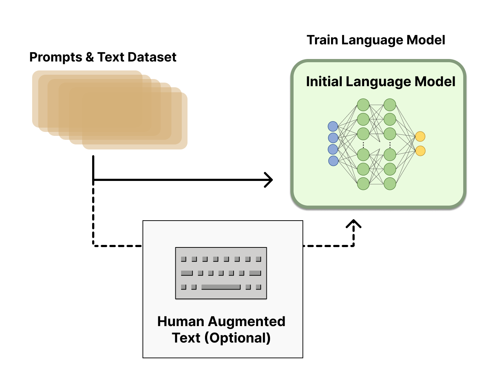

简介
RLHF（Reinforcement Learning from Human Feedback）：即使用强化学习的方法，通过人类反馈来指导智能系统的行为。在RLHF中，人类提供关于智能系统行为的反馈，比如哪些行为是正确的，哪些行为是错误的。根据这些反馈，智能系统可以逐步改进自己的行为策略，在未来采取更加明智的行为。这种方法减轻了传统强化学习中需要大量试错的问题，使得智能系统更加高效、快速地学习任务
应用场景
第一种情况：无法创建好的损失函数
在某些任务中，由于任务复杂性或主观性，难以明确定义一个可用作损失函数的标准。在这种情况下，使用人类反馈进行强化学习可以是一个更合适的选择。通过让人类提供关于系统行为的反馈，可以指导模型生成更符合期望的输出。例如，在语言生成任务中，人们很难定义出“正确”的输出，因为输出的灵活性和多样性很高。通过让人类选择他们认为有趣的输出，并将其用作正面反馈，同时选择不有趣或令人讨厌的输出作为负面反馈，模型可以逐渐学习生成更有趣的输出。
第二种情况：难以对生产数据进行标记
在某些情况下，生产数据可能非常庞大，手动标记数据需要耗费大量时间和成本，或者标记数据的困难性可能需要专业知识或主观判断。在这种情况下，使用人类反馈进行强化学习可以作为一种无监督学习方法。模型与生产数据进行交互，并从人类反馈中学习，以逐渐提高性能，而无需标记数据。例如，在聊天机器人应用中，模型可以生成回答并让人类评审员提供反馈。这些反馈可以作为正面或负面奖励，指导模型如何更好地回答问题。通过不断的交互和反馈，模型可以逐步改善输出结果，以满足实际需求。
总体而言，使用人类反馈进行强化学习（RLHF）可以解决无法创建好的损失函数或难以标记生产数据的问题，并通过人类反馈指导模型的学习和改进。这种方法可以使模型逐步提高性能，同时减少对人工标记数据的需求。
样例代码
- DeepSpeed-Chat https://github.com/microsoft/DeepSpeedExamples/tree/master/applications/DeepSpeed-Chat
- PaLM-rlhf-pytorch https://github.com/lucidrains/PaLM-rlhf-pytorch
- Open-Assistant https://github.com/LAION-AI/Open-Assistant
- Transformer Reinforcement Learning X https://github.com/CarperAI/trlx
- https://github.com/anthropics/hh-rlhf
相关论文
方法流程
- 预训练语言模型（LM）
- 聚合问答数据并训练一个奖励模型（reward model）
- 使用 RL 对 LM 进行微调（Fine-tuning）

预训练语言模型（LM）
在使用RLHF方法进行文本生成之前，需要获得一个语言模型。可以选择从头开始训练模型，也可以使用预训练的模型，如GPT-3。
如果已经拥有一个预训练的语言模型，可以选择进行监督式微调（SFT），这是一个可选的步骤。在SFT中，需要准备一些人工标注的（输入，输出）文本对，并使用这些数据对已有的语言模型进行微调。监督式微调有助于提高模型在特定任务上的性能表现，为RLHF提供高质量的初始化。
在使用SFT进行微调时，可以使用标准的监督学习方法。将人工标注的（输入，输出）文本对作为训练样本，使用反向传播算法来更新模型参数。通过这种方式，可以使模型更好地理解每个输入与其对应的输出，并对其进行相应的操作。此外，SFT还可以有效地减少模型顺序执行时出现的错误，从而提高生成结果的质量。
完成监督式微调和其他必要的步骤后，将获得一个训练好的语言模型（LM）。这个训练好的LM将作为主模型，并将用于使用RLHF方法进行进一步的微调。
由于已经使用人工标注的数据对LM进行了微调，现在的LM已经可以更好地理解每个输入与其对应的输出。这使得可以更加高效地使用RLHF方法进行微调。在后续的步骤中，将使用RLHF算法来进一步训练这个已经微调好的LM，从而生成更高质量、更准确的文本生成结果。

聚合问答数据并训练一个奖励模型（Reward Model，RM）
在这一步中，需要收集一个数据集，其中包含（输入文本，输出文本，奖励）三元组。
数据收集的流程为：首先使用输入文本数据（如果是生产数据，则效果更好），将其通过模型生成相应的文本输出。然后，让人类专家对这个生成的输出结果进行评估，并为其打分或给予奖励信号。这些奖励信号将被用来指导RL算法的学习过程，从而帮助我们进一步微调模型，生成更好的文本输出结果。
为了确保数据集的质量，需要选择高质量、多样化的输入文本，并且尽可能地避免使用重复的或过于简单的语句。同时，也应该选择具有代表性的人类专家来评估生成的输出结果，并为其提供准确的评价或奖励信号。这样可以确保收集到的数据集可以在后面的RLHF微调中有效地提高模型的性能表现。
通常情况下，奖励信号使用0到5之间的整数进行表示，其中5表示最高的奖励，0则表示最低的奖励。这种奖励信号可以让RLHF算法更好地理解生成的文本输出结果，并且在后续的微调阶段中有助于提高模型的性能表现。
当然，有时候也可以使用简单的二元奖励信号，例如使用“赞”或“踩”符号来表示给予的奖励或惩罚。虽然这种方法可能比使用整数奖励信号更加简化，但它可能会降低收集数据集的可靠性，因为仅仅给出一个简单的奖励信号往往无法充分反映出生成的文本质量的差异。
我们可以使用这个新的数据集来训练一个奖励模型，该模型可以将（输入文本，输出文本）作为输入，并返回一个奖励的标量值作为输出。这个奖励模型可以模拟人类专家对生成的文本质量的评价和奖励，从而可以在没有人类参与的情况下进行RLHF训练。
使用这个奖励模型，我们可以设计一个离线的RLHF算法，该算法可以通过先使用语言模型生成一组文本输出，然后使用奖励模型评估这些输出的质量，最后使用RL算法根据奖励信号微调模型。这样，我们就可以在没有人类参与的情况下，自动地对模型进行优化和微调，以提高其生成的文本质量。
在训练奖励模型时，需要保证数据集的质量和多样性，从而确保模型可以准确地学习到人类专家的评价和奖励行为。此外，还需要确保奖励模型具有足够的泛化能力，从而可以在不同领域和任务中进行有效的模型微调。

用强化学习（RL）方式微调 LM
我们将使用奖励模型返回的奖励信号来训练主模型，也就是我们训练好的语言模型。然而，由于奖励信号是非可导的，我们需要使用RL算法（如：PPO算法）来构建一个可以反向传播到语言模型的损失函数。
具体来说，我们可以使用强化学习中的Q-learning算法来实现这个过程。在RLHF算法中，我们将把语言模型看作是我们的“智能体”，其任务是产生高质量的文本输出，奖励模型将根据人类专家的评价和反馈来分配奖励信号。在每次迭代中，我们都会计算奖励模型返回的奖励信号，将其作为Q-learning算法的奖励反馈，并使用奖励信号来更新语言模型的策略，以便在下一次生成文本时产生更好的结果。
通过不断地迭代这个过程，我们可以逐步优化语言模型的性能，使其在生成文本时更加准确和自然。同时，借助RL算法的强大功能，可以有效地解决传统优化方法无法解决的问题，例如生成文本中的不连贯性和模型的过拟合问题。
在流程的开始，我们将创建一个精确复制我们的语言模型，并冻结它的可训练参数。这个复制的模型可以帮助防止可训练的语言模型完全改变其权重并开始输出无意义的文本，从而影响奖励模型的训练。
这也是为什么我们要计算冻结和非冻结语言模型的文本输出概率之间的KL散度损失。这个KL损失将被加到由奖励模型产生的奖励之中。实际上，如果您正在进行在线学习的模型训练过程中，可以直接用人工鉴定的奖励分数来替代奖励模型。
有了奖励和KL损失，我们现在可以应用RL算法使奖励损失变得可导。为什么奖励不可导呢？因为它是由奖励模型根据文本生成的结果计算出来的。这个文本是通过对语言模型的输出对数概率进行解码得到的。该解码过程是不可导的。

近端策略优化算法 (Proximal Policy Optimization，PPO) 介绍
。。。
参考文章
从零实现ChatGPT——RLHF技术笔记 https://zhuanlan.zhihu.com/p/591474085
Illustrating Reinforcement Learning from Human Feedback (RLHF) https://huggingface.co/blog/rlhf
ChatGPT 背后的“功臣”——RLHF 技术详解 https://huggingface.co/blog/zh/rlhf
从人类反馈中进行强化学习（RLHF）- 白话解释 https://zhuanlan.zhihu.com/p/631238431
详解大模型RLHF过程（配代码解读） https://zhuanlan.zhihu.com/p/624589622
Introducing ChatGPT https://openai.com/blog/chatgpt
2022 GPT 发展：ChatGPT成功面世，LLM 里程碑式胜利 https://zhuanlan.zhihu.com/p/608837650
by Tan